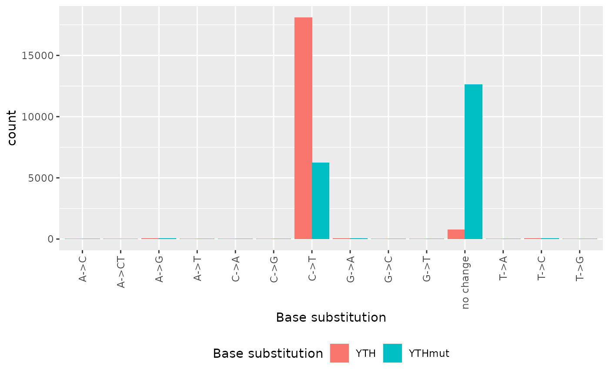
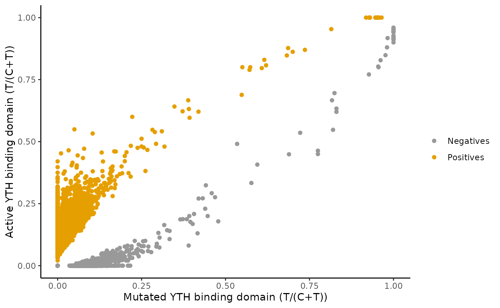

vignettes/JACUSA2helper-figure1f.Rmd
JACUSA2helper-figure1f.RmdA complementary genetic approach is an extension of the TRIBE technique called DART-seq Meyer (2019). Meyer applied DART-seq on HEK293 cells where the APOBEC domain was fused to the YTH domain from human YTHDF2 (WT and mutated). In essence, new C-to-U editing events that are significantly enriched in the YTHDF2-WT, but not in the binding domain mutant are bona fide candidates for m6A RNA modification. JACUSA2helper supports the analysis of DARTseq data too (see below). Input is typically read in via read_result.
data("DARTseq")
filtered <- DARTseq
filtered[["bc"]] <- lapply_cond(filtered$bases, function(b) { Reduce("+", b) } ) %>%
Reduce("+", .) %>% base_count()
filtered <- filtered %>%
dplyr::filter(score >= 2) %>%
dplyr::filter(All(cov$cond1 >= 10) & All(cov$cond2 >= 10)) %>%
dplyr::filter(bc <= 2) %>%
dplyr::filter(robust(bases))The above code sequence filters the input to include only sites, which have a call-2 score higher than 2, a coverage across all replicates of at least 10. Moreover, the number of distinct base calls should be less or equal 2 (preferably C and U/T) and the base substitution should be visible in all replicates of at least one condition.
# sum base call counts of condition / RNA replicates
rna_bases <- Reduce("+", filtered$bases$cond2)
# we don't need lapply_repl, because we don't operate on all replicate from all
# conditions - only condition 2 / RNA
ref2YTHmut <- base_sub(rna_bases, filtered$ref)
table(ref2YTHmut)
#> ref2YTHmut
#> A->C A->G A->T C->A C->G C->T G->A G->C
#> 9 47 3 5 7 6243 51 12
#> G->T no change T->A T->C T->G
#> 3 12614 2 52 4
rnaref <- Reduce("+", filtered$bases$cond1)
ref2YTH <- base_sub(rnaref, filtered$ref)
table(ref2YTH, ref2YTHmut)
#> ref2YTHmut
#> ref2YTH A->C A->G A->T C->A C->G C->T G->A G->C G->T no change
#> A->C 5 0 0 0 0 0 0 0 0 0
#> A->CT 2 0 0 0 0 0 0 0 0 0
#> A->G 0 44 0 0 0 0 0 0 0 6
#> A->T 0 0 1 0 0 0 0 0 0 1
#> C->A 0 0 0 4 0 0 0 0 0 0
#> C->G 0 0 0 0 7 0 0 0 0 0
#> C->T 0 0 0 0 0 5526 0 0 0 12577
#> G->A 0 0 0 0 0 0 41 0 0 15
#> G->C 0 0 0 0 0 0 0 12 0 0
#> G->T 0 0 0 0 0 0 0 0 3 0
#> no change 2 3 2 1 0 717 10 0 0 0
#> T->A 0 0 0 0 0 0 0 0 0 1
#> T->C 0 0 0 0 0 0 0 0 0 14
#> T->G 0 0 0 0 0 0 0 0 0 0
#> ref2YTHmut
#> ref2YTH T->A T->C T->G
#> A->C 0 0 0
#> A->CT 0 0 0
#> A->G 0 0 0
#> A->T 0 0 0
#> C->A 0 0 0
#> C->G 0 0 0
#> C->T 0 0 0
#> G->A 0 0 0
#> G->C 0 0 0
#> G->T 0 0 0
#> no change 0 14 0
#> T->A 2 0 0
#> T->C 0 38 0
#> T->G 0 0 4The following barplot summarizes the number of sites by characteristic base substitutions relative to the reference sequence. We observe a lot more C-to-U transistions in the active YTH binding domain as compared to the inactivated binding domain.
tidyr::tibble(
base_sub = c(ref2YTH,ref2YTHmut),
Source = c(
rep("YTH",length(ref2YTH)),
rep("YTHmut",length(ref2YTHmut)))
) %>% # ggplot requires a data frame
ggplot2::ggplot(ggplot2::aes(x = base_sub, fill = Source)) +
ggplot2::geom_bar(position = "dodge") +
ggplot2::xlab("Base substitution") +
ggplot2::scale_fill_discrete(name = "Base substitution") +
ggplot2::theme(
legend.position = "bottom",
axis.text.x = ggplot2::element_text(angle = 90, vjust = 0.5, hjust=1)
)
tempo <- lapply_cond(
lapply_cond(filtered$bases, function(b) { Reduce("+", b) } ),
base_ratio
)
filtered[["YTH.t.ratio"]] <- tempo$cond1$T
filtered[["YTHmut.t.ratio"]] <- tempo$cond2$T
filtered[["pred"]] <- ifelse(
tempo$cond1$T > tempo$cond2$T,
"Positives",
"Negatives"
)
filtered$coord <- JACUSA2helper::coord(filtered)The following scatter plot summarizes the T/(C+T) frequencies and labels them.
ggplot(filtered, aes(x=YTHmut.t.ratio, y=YTH.t.ratio,color=pred)) +
geom_point() +
ggplot2::xlab("Mutated YTH binding domain (T/(C+T))") +
ggplot2::ylab("Active YTH binding domain (T/(C+T))") +
scale_color_manual(values=c('#999999', '#E69F00'), name = "") +
theme_classic()
Meyer, Kate D. 2019. “DART-Seq: An Antibody-Free Method for Global m6A Detection.” Nature Methods 16 (12): 1275–80. https://doi.org/10.1038/s41592-019-0570-0.